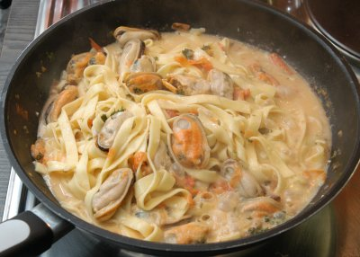

| Zutaten: | |
| 50 g | Nudeln extra fein |
| 300 g | Miesmuscheln |
| 3 | Knoblauchzehen |
| 2 | Tomaten |
| 1 dl | Weisswein |
| Bouillon | |
| Petersilie | |
| Mayonnaise | |
Knoblauch und Petersilie fein hacken
Tomaten fein hacken
Knoblauch und Petersilie andünsten. Die fein gehackten Tomaten beigeben. Mit dem Weisswein ablöschen.
Die Miesmuscheln werden zugefügt und so viel Bouillon zugeben, bis die Muscheln zugedeckt sind. Auf kleinem Feuer weiter kochen lassen, bis sich die Muscheln geöffnet haben.
Die Fadennudeln werden in Salzwasser ca. 10 Minuten gekocht. Sie werden kurz in Butter geschwenkt und den Muscheln beigemengt.
Sauce zubereiten aus Mayonnaise, leicht verdünnt mit Wasser und zwei zerkleinerten Knoblauchzehen. Beimischen.
Hat hervorragend geschmeckt und war einfach zuzubereiten. Ich habe natürlich vereinfacht und geschälte Miesmuscheln genommen. Mit der Schale zubereitet hat man doch bloss Schalensplitter im Mund? RE 27.2.2007
Herbert kommentiert 2018: Dünne Nudeln sind besser geeignet als breite wegen der grösseren Oberfläche und können mehr Flüssigkeit aufnehmen. Er verwendete 1kg gekochte Miesmuscheln mit Schale, die gefroren in der Migros verkauft werden. Das gab etwa 250g Muscheln (nur Fleisch). Mit 100g Nudeln, 4 Tomaten, 2dl Weisswein gab das ein eher kanppes Essen für 2 Personen.
Renate I. meldet mir, dass der Titel "Fideos con Almejas" falsch sei weil das die Vongole seien. Im Bild und im Rezept habe ich Miesmuscheln verwendet. Folglich habe ich den Titel angepasst. Vermutlich gelingt das Rezept aber auch mit den Almejas Muscheln. RE 10.8.2026